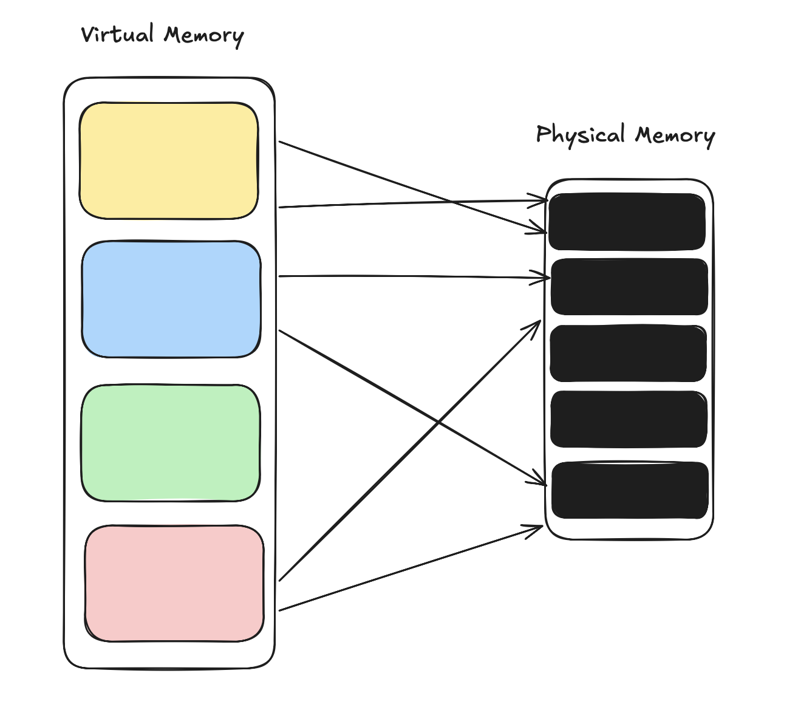
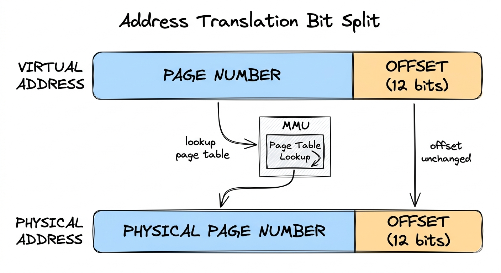
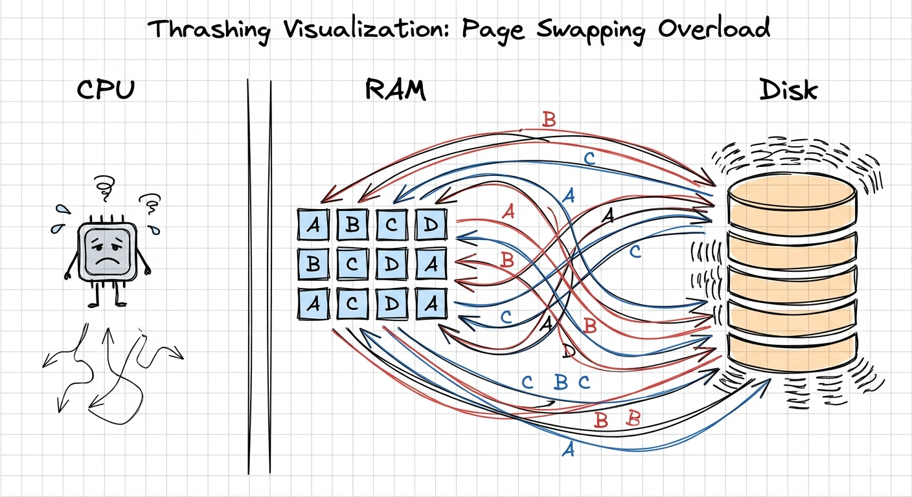

In the last blog, we explored how the CPU scheduler decides which process runs and when. Sharing a single CPU across dozens of processes is a hard enough problem on its own. But there is another resource every process needs just as desperately: memory.
This time, let's talk about how the operating system manages RAM.
The Problem with Sharing Memory
Imagine your desk has a fixed amount of space. You are working on several projects at once: a browser, a code editor, a music player. Each one needs room to spread out its papers. If two projects accidentally use the same spot on the desk, things go wrong fast. Papers get overwritten, calculations corrupt each other.
Early computers had exactly this problem. Programs had to be manually assigned fixed memory addresses, and if two programs shared a machine, the programmer had to make sure they never stepped on each other's toes. This was fragile and error-prone, and it made truly isolated execution nearly impossible.
The operating system needed a smarter approach.
The Concept of Virtual Memory
The key insight is simple: every process should think it has the entire memory space to itself.
When your browser runs, it should not have to worry about where Spotify's data lives. It should just see a large, clean address space and use it freely. The operating system, working invisibly underneath, translates those addresses into real physical memory locations.
This is called virtual memory.
Each process gets its own virtual address space. The OS maintains a mapping between the virtual addresses a process uses and the physical addresses where that data actually lives in RAM. The process never touches real memory directly; it only ever talks to the OS's abstraction layer.
This buys the system three big things: isolation, so one process cannot accidentally read or write another's memory; flexibility, so the OS can scatter a process's data across non-contiguous physical memory without the process knowing or caring; and the illusion of more memory than actually exists. We will see how that last one works shortly.

Juggling multiple isolated virtual perspectives on top of one physical pool of RAM.
Pages and Frames: The Core Abstraction
So how does the OS implement this mapping in practice? The naive approach would be to track every individual byte, maintaining a translation for each one. But a modern process might touch gigabytes of memory. Storing a separate mapping entry for every single byte would consume more memory than the system has available, which defeats the purpose entirely.
The OS needs a unit of memory large enough to make the bookkeeping tractable, but small enough to avoid wasting too much space. That unit is the page.
Virtual memory is divided into pages, typically 4KB each. Physical memory is divided into frames of the same size. Instead of tracking individual bytes, the OS only needs one mapping entry per page, shrinking the table by a factor of 4096. The OS maps pages to frames, and that mapping lives in a data structure called a page table, one per process.
When a process accesses a virtual address, a piece of hardware called the Memory Management Unit (MMU) automatically consults the page table, finds the corresponding physical frame, and completes the access. This happens on every single memory reference, but it is fast enough that programs barely notice.
Think of it like a library. The library has shelves numbered 1 to 1000 (physical frames). You have your own personal index of where you left things: "chapter 3 notes" on shelf 12, "reference material" on shelf 47. The catalog (the page table) maps your personal index to actual shelf numbers. You think in your own terms; the library handles the physical location.
This also starts to hint at something worth keeping in mind: files on disk and pages in memory are not entirely separate worlds. When you open a document and start editing it, the OS is reading blocks from the file system and loading them into memory pages. The line between storage and RAM is thinner than it looks.
How Address Translation Actually Works
It helps to walk through what happens when a process reads from a virtual address, say 0x7fff_1234_5678.
The virtual address is split into two parts. The upper bits identify which page the address falls within. The lower 12 bits (for a 4KB page) are the offset within that page, meaning which byte within those 4096 bytes the process actually wants.
The MMU takes the page number, looks it up in the process's page table, and gets back the physical frame number. It then attaches the original 12-bit offset to the end, producing the final physical address, and the memory access proceeds.
The offset is what makes pages elegant. Because pages are power-of-two sizes, the offset bits stay completely unchanged between virtual and physical addresses. The MMU only has to replace the page number part; the math is just bit concatenation, which hardware does in a single clock cycle.

The architectural pipeline of virtual-to-physical bit conversion.
Page Faults: Bringing Data In On Demand
The OS does not have to load an entire process into RAM at startup. It can begin with only a handful of pages loaded and bring in more on the fly as the program touches them. This is called demand paging.
When a process tries to access a virtual address whose page is not currently in physical memory, the hardware raises a page fault. The CPU stops what it is doing and hands control to the OS, which then finds the requested page on disk (in a reserved area called swap space), loads it into a free physical frame, updates the page table, and resumes the process as if nothing happened.
The process never knew there was a gap. From its perspective, the memory was always there.
This is how the illusion of more memory works. A process's virtual address space might span gigabytes while the system only has 8GB of physical RAM. Pages that are not currently needed just sit on disk, waiting. The OS pulls them in only when the program actually reaches for them.
It is worth noting that swap space lives in the file system. When the OS pages out memory to disk, it is writing to a special file or partition managed by the same underlying storage infrastructure that holds your documents and executables. Memory management and file systems are deeply intertwined, even if they appear separate from the outside.
Page Replacement: The Hard Part
Physical RAM is finite. When a page fault occurs and no free frames are left, the OS has to pick an existing page to evict: write it back to disk and hand over the frame to the incoming page.
Choosing the wrong page to evict is costly. If the evicted page is needed again almost immediately, you get another page fault and another slow round trip to disk. Several strategies have been developed to avoid this.
FIFO (First In, First Out)
Evicts the page that has been in memory the longest. It is simple to implement, but not very smart: a page loaded at startup that gets used constantly will be thrown out just because it has been around a while.
LRU (Least Recently Used)
Evicts the page that has not been accessed for the longest time, on the reasoning that recently untouched pages are unlikely to be needed soon. LRU works well in practice, but it is expensive to implement precisely because the OS has to track exact access order on every memory reference.
Clock (Second Chance)
Is a practical middle ground. Pages sit in a circular list, each carrying a reference bit that gets set when the page is accessed. When the OS needs to evict, it sweeps around the clock: if a page's reference bit is 1, it clears the bit and moves on; if the bit is 0, that page gets evicted. Frequently used pages keep getting their bits reset before the clock hand reaches them, so they survive. Pages that nobody is accessing lose their chance quickly.
Thrashing: When the System Fights Itself
One of the most dramatic failure modes in memory management is thrashing.
Picture too many processes running at once, each one needing more memory than the system can provide. The OS frantically swaps pages in and out, but almost immediately after loading a page, another process needs that frame, so the OS evicts it. Then the first process needs it back. The machine spends nearly all its time shuffling pages between RAM and disk, and almost none of it actually running programs.
CPU utilization tanks. The machine becomes sluggish or nearly unresponsive. If you have ever watched a computer with the disk light blinking constantly while nothing seems to happen on screen, you have seen thrashing in action.
The fix is usually to reduce the number of competing processes, either by suspending some entirely or by the OS enforcing stricter limits on how much memory each process is allowed to hold at once. Modern systems try to catch this early before it spirals.

The tipping point of thrashing: system performance consumed entirely by disk swap overhead.
Segmentation vs. Paging
Before paging became the standard, an older model called segmentation was widely used.
In segmentation, memory is divided into variable-length segments: one for code, one for the stack, one for the heap, and so on. Each segment has a base address and a length, and the OS enforces that every access stays within bounds. Segmentation maps naturally to how programmers think about their programs, with code clearly separated from data and the stack growing independently from the heap.
But segmentation creates a nasty problem over time called external fragmentation. As segments get allocated and freed, physical memory ends up looking like Swiss cheese: lots of small gaps between occupied regions. You might have 200MB of free memory and still be unable to fit a 150MB segment because the free space is scattered in pieces rather than contiguous.
External Fragmentation: Memory gets riddled with gaps that are individually too small to be useful.
Paging avoids this entirely by working with fixed-size units. Every free frame is exactly the right size for exactly one page, with no awkward gaps. The tradeoff is internal fragmentation: the last page of any region might only be partially filled, but this waste is bounded and predictable, which is much easier to reason about.
Modern systems often combine both ideas, a technique called segmented paging: segments define broad logical regions like code, stack, and heap, with paging handling the fine-grained allocation within each one.
TLB: Making Translation Fast
Address translation happens on every single memory access. Without hardware help, consulting the page table each time would make programs two or three times slower.
The Translation Lookaside Buffer (TLB) is a small, extremely fast cache built into the CPU that stores recent virtual-to-physical translations. When the CPU needs to translate an address, it checks the TLB first. A hit means an immediate physical address with no page table lookup at all. A miss means the CPU walks the page table, performs the translation, and stores the result in the TLB for next time.
This works well because most programs have locality of reference: they tend to access the same memory regions repeatedly in short windows of time. TLB hit rates are usually above 99%, which makes the overhead of translation nearly invisible in practice.
When a context switch happens and a new process takes the CPU, the TLB has to be flushed or tagged with a process identifier, because all those cached translations belong to the previous process and are meaningless to the new one. This is part of why context switching is not entirely free, which connects back to what we covered in the scheduling blog.
Memory-Mapped Files: Where RAM Meets the File System
One of the more elegant applications of virtual memory is memory-mapped files, and this is where the connection between memory management and the file system becomes very concrete.
Normally, reading a file means making system calls: open the file, call read(), copy data into a buffer, close the file. With memory mapping, a process can instead ask the OS to map a file directly into its virtual address space. The file's contents appear as ordinary memory: reading from a virtual address reads the file, and writing to it modifies the file. No explicit read() or write() calls are needed. The OS handles loading pages from the file system on demand and flushing changes back to disk in the background, using the same page fault mechanism we already discussed.
This is how many programs load shared libraries. The C standard library, for example, gets mapped into the virtual address space of every process that uses it. Each process sees the library at its own virtual address, but only one copy of the library's pages lives in physical RAM at any given time, shared across all of them. The file system provides the backing store; virtual memory provides the sharing.
A page fault, then, is not always about swap space. When you open a large log file and your program reads through it, each section gets pulled into RAM as a page on demand. If memory runs tight, those file-backed pages can be evicted without writing anything to swap, because the original data is already sitting safely on disk, so the OS simply discards the page and knows it can reload from the file if needed again.
Final Thoughts
Virtual memory is one of the more satisfying abstractions in operating systems. Every process gets what feels like a vast, private, contiguous address space. In reality, the OS is juggling fragmented physical RAM, consulting page tables on every access, swapping pages in from disk when needed, sharing library code across dozens of processes, and keeping a warm page cache full of recently touched file data.
None of that complexity leaks out to the programs running on top.
In the next blog, we will look at how the OS manages persistent storage: how file systems are structured, how data survives a reboot, and what actually happens when you hit save. Thanks for reading along.